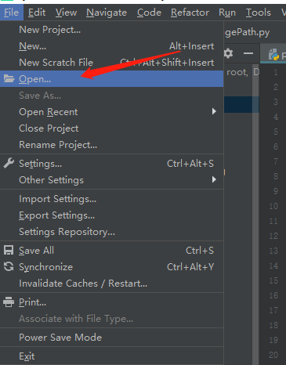
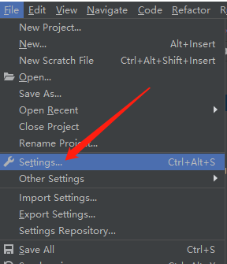
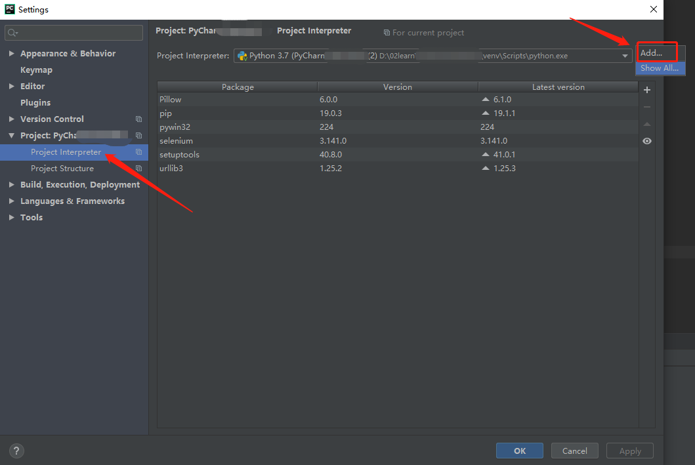
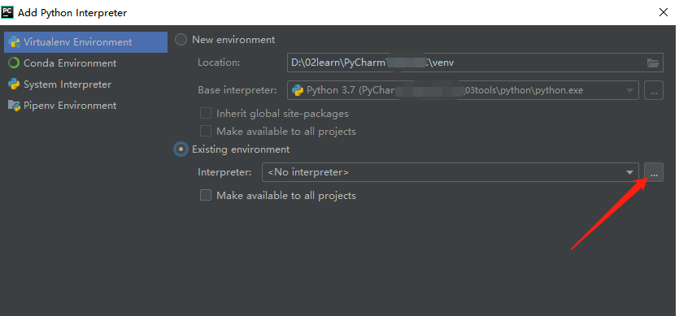

进入PyCharm后，点击File→Open，然后在弹窗中选择需要导入项目的文件夹；

打开了python项目后，需要配置该项目对应的python才可以正常运行；
配置步骤：File→settings

在设置弹窗中选择Project Interpreter，然后点击add；

在弹窗中，选择Existing environment，路径可以选择python项目的路径；
然后就大功告成了，可以去试着运行你的程序了~
